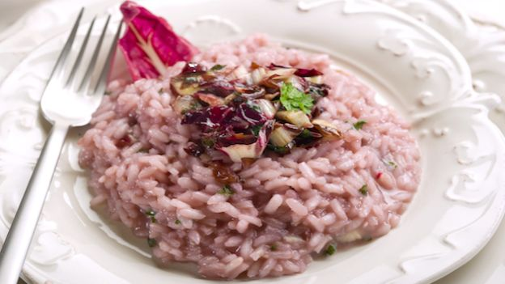

Recipe for "Risotto al Radicchio"
Ingredients for two/three people
- Risotto Rice (Vialone Nano or Carnaroli);
- Onions 500 gr.;
- 1 Garlic Head;
- 1l. Vegetable or Meat broth;
- White cooking wine (500 cl.);
- 1 teaspoon Nutmeg;
- 30-50 gr. Butter;
- 100 gr. Parmigiano Cheese.
Preparation
- Wash the rice thoroughly at least three times;
- Cut the onions and the garlic in tiny cubes;
- Prepare a pot with boiling broth on the side;
- Spread some oil on a frying pan and once it gets very warm, add the onions and the garlic and let
the whole fry until it gets a golden texture;
- Add a spoonful of broth and let the onions and garlic cook for a couple minutes and then add the
rice;
- Toast the rice for some time, until it starts to stick to the bottom of the frying pan;
- Add a glass full of white cooking wine and wait until it completely evaporates;
- Ad repetitiously spoonfuls of broth to the rice and continue stirring until the fluidity decreases.
Keep the fire high and once it does, add broth again;
- Try and taste a grain of rice after 20-25 minutes of cooking and stirring and add the nutmeg;
- Once the rice is ready, take it out of the fire and let it rest for at least 5 minutes;
- Add the butter, the parmesan cheese and stir until both are completely melted;
- The rice is ready.